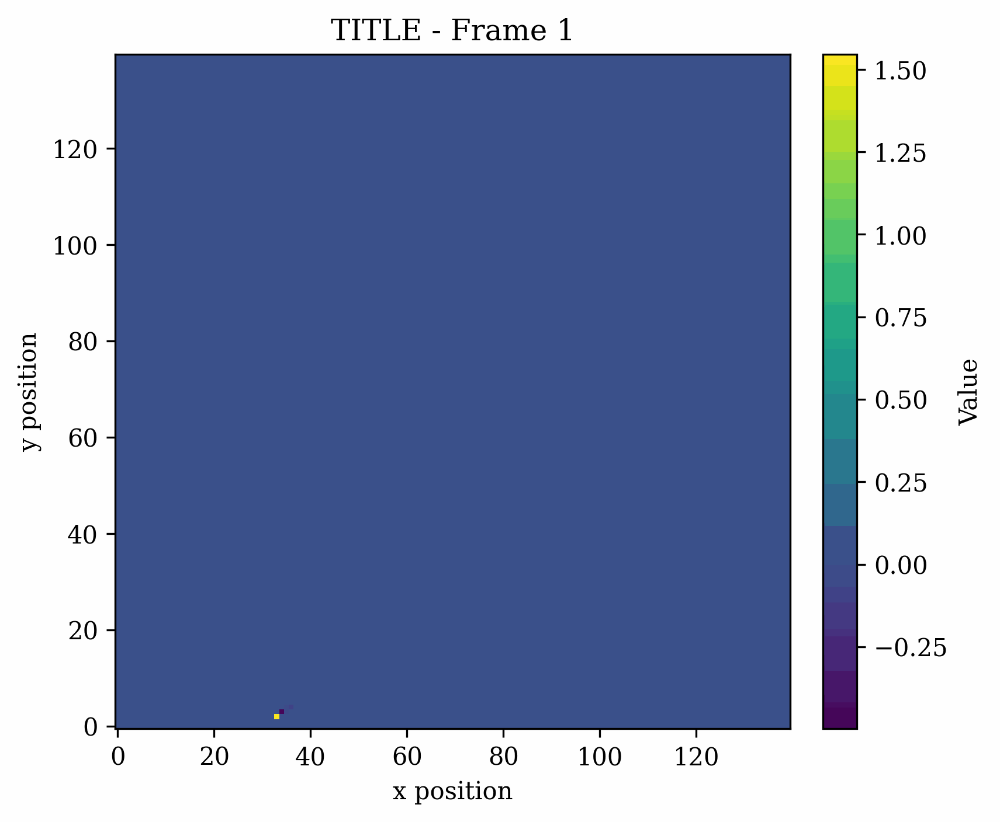
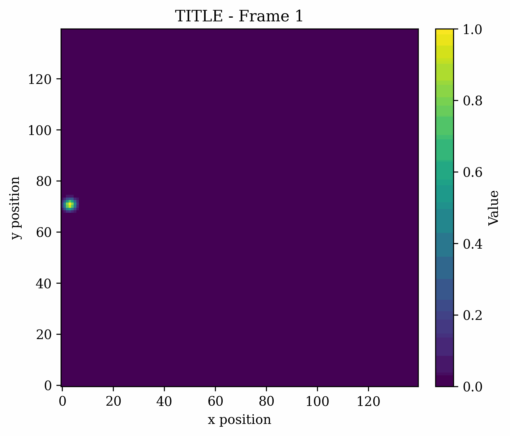
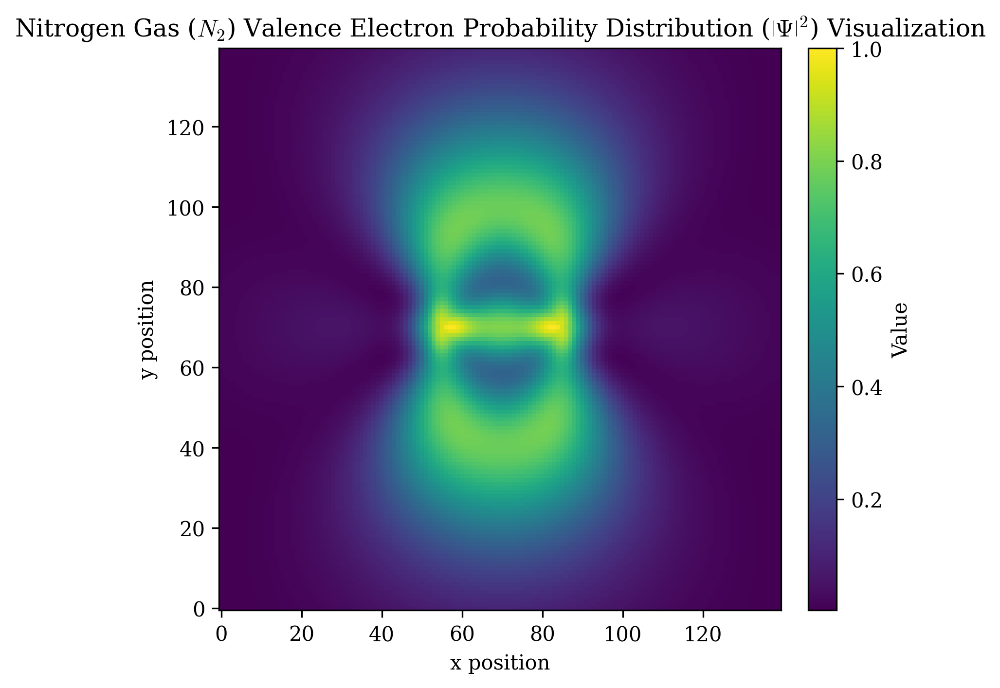
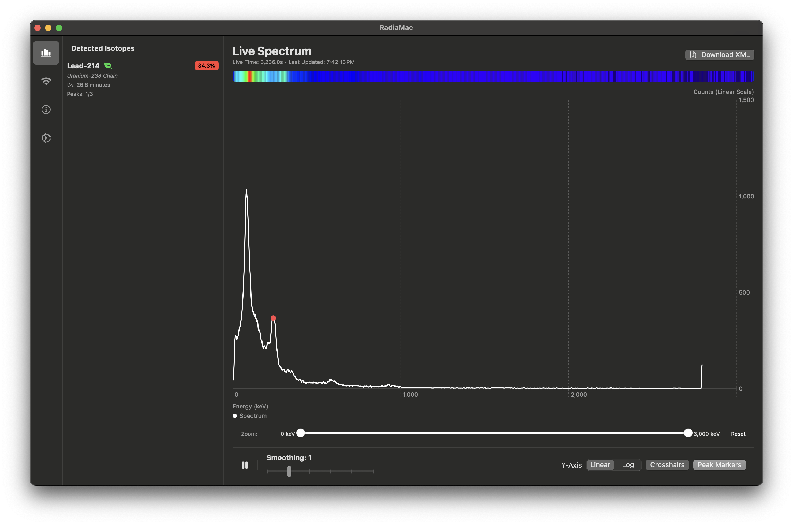
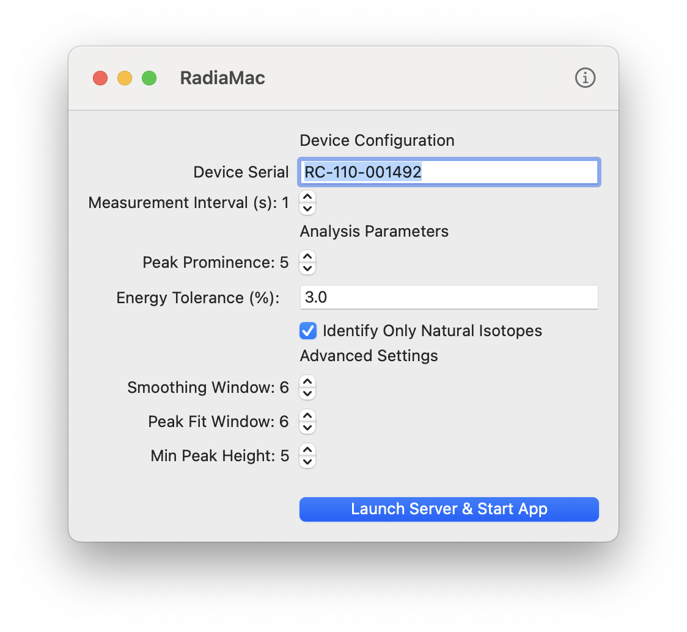
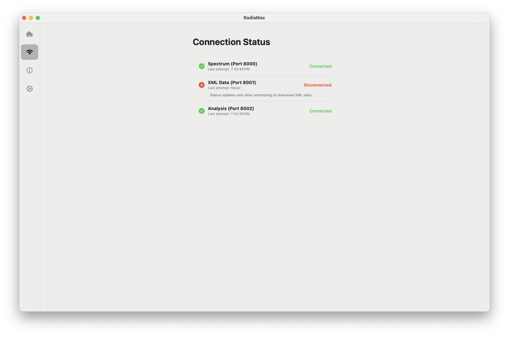
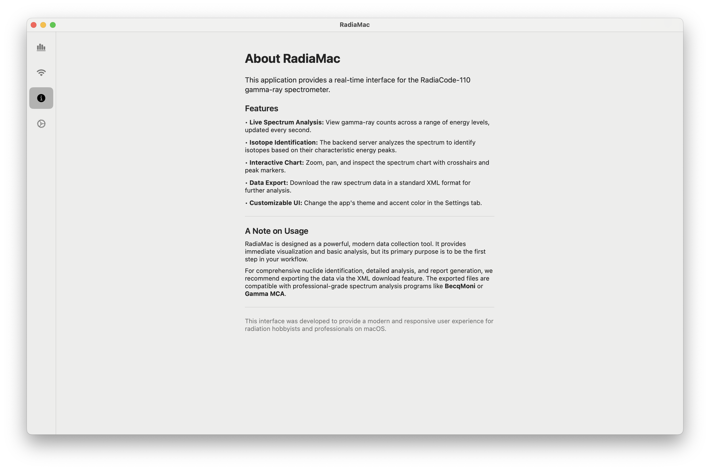

Matrix Based Physics Simulation
This project of mine produced realistic physics simulations by calculating matrices, items, and their distances to the center cell (the cell which shot the projectile). It then used algebraic transformations and trigonometric functions to simulate the motion of the beam/object. Here are some examples of the simulations:

This is an animation of a beam of simulated light being reflected off an almost completely reflective surface.

For this simulation, I developed a way for beams to be curved by a force. This isn't one specific beam of anything though; it's simply a generic beam.

This is, once again, a demonstration of forces interacting with simulated objects.

This is a demonstration of the visualization of my simulation. It shows a single nitrogen gas electron probability cloud. Keep in mind this is only a 2D slice and neglects to reveal the second pi bond found in N2 gas.
Gamma Scintillation macOS Aid
I had gotten frustrated that my scintillation probe didn't have a native application on macOS... So I made
one! It used Gaussian filters and extensive mathematical calculations to help aid in the detection of certain types of radioactive elements.
It was limited, though, and still required an external program for deeper analysis.
Here are some snapshots of it in use:



